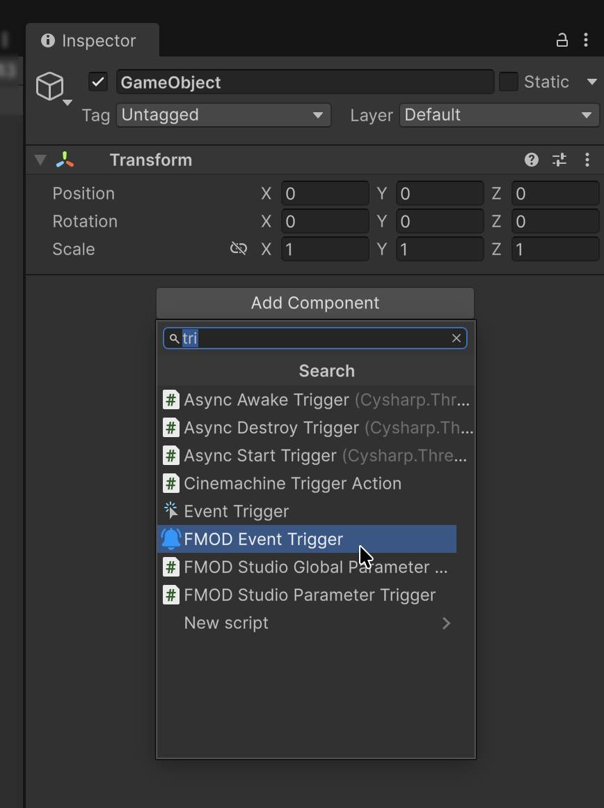
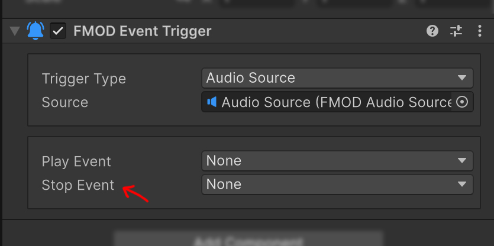

Event Trigger
FMODEventTrigger는 FMOD for Unity의 EventHandler를 기반으로 Unity의 GameObject, Physics, Mouse와 UI Pointer Event를 FMODAudioSource 또는 CommandSender에 전달합니다. 코드를 작성하지 않고 영역 진입 시 Snapshot을 재생하거나 UI 입력으로 Parameter 명령을 보낼 수 있습니다.
컴포넌트 추가하기
Event를 감지할 GameObject의 Add Component에서 FMOD Studio > FMOD Plus > FMOD Event Trigger를 선택합니다.

Trigger 또는 Collision을 사용할 경우 이 GameObject에 필요한 Collider와 Rigidbody를 함께 구성합니다. 실제 Audio Source나 Command Sender는 같은 GameObject 또는 다른 GameObject에 있어도 됩니다.
Trigger Type
Audio Source
Trigger Type을 Audio Source로 설정하면 다음 필드가 표시됩니다.

| 필드 | 동작 |
|---|---|
| Audio Source | 재생과 정지 명령을 받을 FMODAudioSource |
| Play Event | 선택한 Unity Event에서 Play() 호출 |
| Stop Event | 선택한 Unity Event에서 Stop() 호출 |
Stop()은 대상 Audio Source의 Allow Fadeout When Stopping 설정을 사용합니다.
Command Sender
Trigger Type을 Command Sender로 설정하면 다음 필드가 표시됩니다.

| 필드 | 동작 |
|---|---|
| Command Sender | 실행할 CommandSender |
| Send Event | 선택한 Unity Event에서 SendCommand() 호출 |
Command Sender Target에서는 Stop Event가 숨겨지고 런타임에서도 무시됩니다.
Tip
정지가 필요하면 Behaviour가 Stop인 Command Sender를 만들고 Send Event로 실행하세요.
지원 Event
None을 선택하면 해당 동작은 실행되지 않습니다.
| 구분 | Event | 발생 시점 |
|---|---|---|
| 생명주기 | ObjectStart |
Start가 호출될 때 |
| 생명주기 | ObjectDestroy |
GameObject가 제거될 때 |
| 생명주기 | ObjectEnable |
컴포넌트가 활성화될 때 |
| 생명주기 | ObjectDisable |
컴포넌트가 비활성화될 때 |
| 3D Trigger | TriggerEnter, TriggerExit |
다른 3D Collider가 Trigger에 들어오거나 나갈 때 |
| 2D Trigger | TriggerEnter2D, TriggerExit2D |
다른 2D Collider가 Trigger에 들어오거나 나갈 때 |
| 3D Collision | CollisionEnter, CollisionExit |
3D Collision이 시작되거나 끝날 때 |
| 2D Collision | CollisionEnter2D, CollisionExit2D |
2D Collision이 시작되거나 끝날 때 |
| Object Mouse | ObjectMouseEnter, ObjectMouseExit |
Pointer가 Collider 영역에 들어오거나 나갈 때 |
| Object Mouse | ObjectMouseDown, ObjectMouseUp |
Collider를 누르거나 놓을 때 |
| UI Pointer | UIMouseEnter, UIMouseExit |
Pointer가 UI 영역에 들어오거나 나갈 때 |
| UI Pointer | UIMouseDown, UIMouseUp |
UI를 누르거나 놓을 때 |